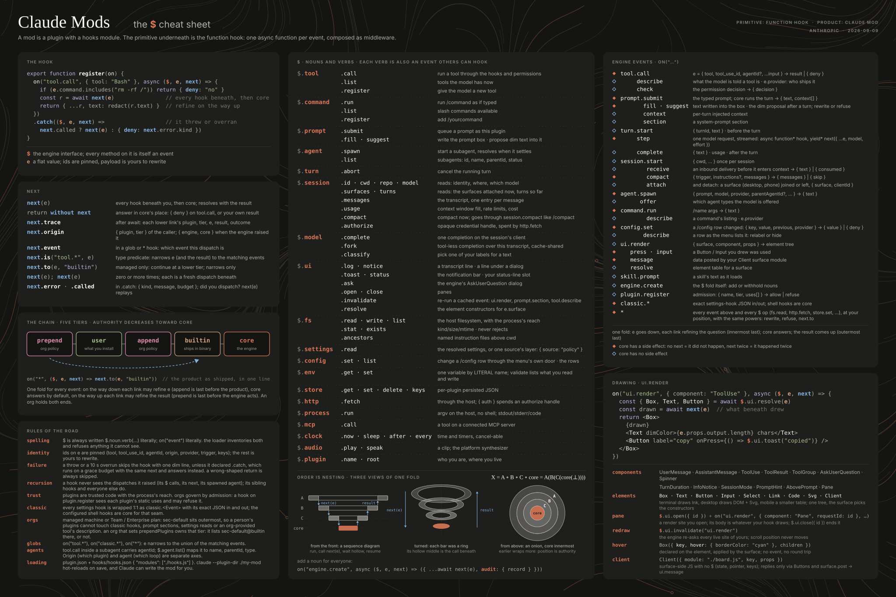
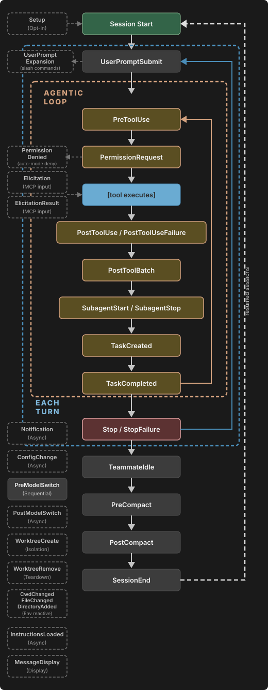
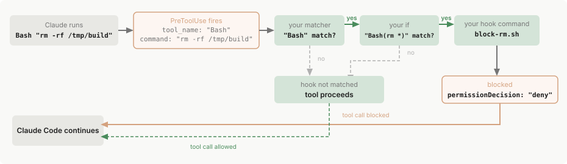
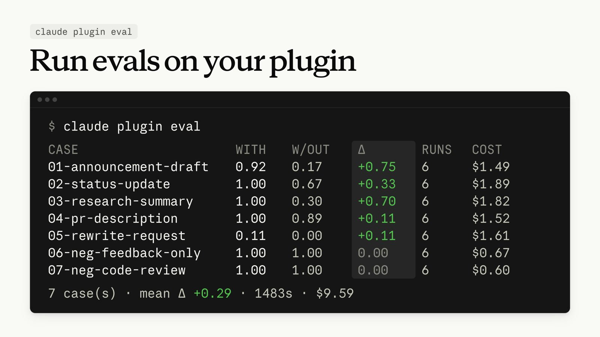
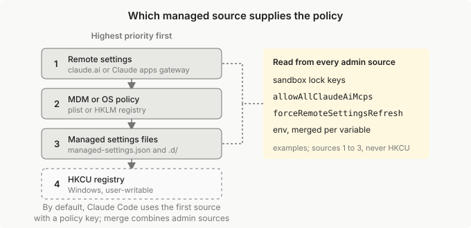

Les mods de Claude Code
Comment fonctionnent les function hooks — les plugins dont tout le comportement tient dans un module TypeScript — et le guide technique de tout ce qu'ils permettent : intercepter, réécrire, refuser ou répondre à chaque événement du moteur, dessiner dans le terminal, ajouter des outils, des commandes, des agents, et étendre $ lui-même.

Les modules de hooks ne se chargent que là où les function hooks sont activés, et l'API contre laquelle ils sont écrits « peut changer d'une version à l'autre sans préavis » (README officiel). Tout ce qui suit est vérifié contre les déclarations 2.1.280 ; en cas de doute, la première ligne de types/claude-code.d.ts dit quelle version l'a écrit — c'est elle qui fait foi.
1Qu'est-ce qu'un mod ?
Un mod est un plugin Claude Code dont le comportement vit dans un module de hooks : une seule fonction d'entrée, register(on, options), qui accroche des fonctions aux événements du moteur. Chaque hook a la forme ($, e, next) :
$— l'interface du moteur (lire des fichiers, lancer un processus, ouvrir un pane, appeler un modèle…), organisée en nouns :$.fs.read,$.ui.open,$.session.id…e— l'argument de l'événement, gelé en profondeur (Frozen<T>) : on ne le modifie pas, on en passe une copie.next— la suite de la chaîne : les hooks en dessous puis le cœur (core). L'appeler, c'est laisser l'effet avoir lieu.
Là où les hooks classiques de settings.json lancent une commande shell qui observe un JSON et répond par un code de sortie, un hook de fonction est dans le chemin d'exécution : il peut réécrire l'entrée, remplacer la sortie, refuser, ou répondre à la place du moteur — et il reçoit une API typée pour le faire.
Observer
Laisser passer avec return next(e), en notant ce qui passe (compteurs, journal, télémétrie).
Réécrire
next({ ...e, text }) : la suite de la chaîne voit l'entrée modifiée ; ou transformer le résultat que next rend.
Refuser
return { deny: "raison" } sans appeler next : l'effet n'a pas lieu, la raison remonte (au modèle, pour un outil).
Répondre
{ value }, { result }, { text }… : le hook tient lieu de cœur. Pas de next = ça n'a pas eu lieu.
Anthropic livre quatre mods intégrés au binaire (tier builtin), dont la source est publiée dans mods/ : sec-default, diff, telemetry et agents-md. Des fonctionnalités que l'on croirait du cœur — le panneau /diff, la lecture de AGENTS.md — sont en fait des mods : c'est la meilleure preuve de ce que l'API permet.
D'où vient la fonctionnalité
Il n'existe pas encore de page consacrée aux mods dans la documentation officielle (code.claude.com/docs), et le CHANGELOG ne les cite pas. La source canonique est l'issue #91870 « Mods — make Claude 10x more extensible », ouverte le 3 septembre 2026 par l'auteur de la fonctionnalité chez Anthropic, avec un PDF d'architecture (Function Hooks Core Architecture) et une cheat sheet. Depuis la mise à jour du 9 septembre, le nom produit est Claude Mods ; function hook reste le nom de la primitive.
D'après l'auteur : les plugins tournent dans un Bun Worker, chacun enveloppé dans un contexte node:vm, sans accès ambiant — tout passe par $. Objectif annoncé : environ 50 µs au p99 par hook. Revers noté par une étude de sécurité tierce (Pluto Security) : un mod reste du code de confiance, capable par $.http.fetch et $.process.run de tout ce que peut le processus ; il n'y a pas encore d'écran de permissions à l'installation.
2Activer et installer
Deux prérequis
- Une version récente. Les mods de ce dépôt sont vérifiés contre Claude Code 2.1.280 ;
claude --versiondit sur quel build vous êtes. - La variable d'environnement. Un module de hooks n'est chargé que si
CLAUDE_CODE_ENABLE_FUNCTION_HOOKS=1est dans l'environnement. Sans elle, le plugin est installé… et ses hooks ne tournent jamais, sans message d'erreur.
# bash, zsh — dans ~/.bashrc ou ~/.zshrc export CLAUDE_CODE_ENABLE_FUNCTION_HOOKS=1 # PowerShell, pour la session courante $env:CLAUDE_CODE_ENABLE_FUNCTION_HOOKS = "1" # Windows, une fois pour toutes setx CLAUDE_CODE_ENABLE_FUNCTION_HOOKS 1
Installer depuis une marketplace
dans une session Claude Code
/plugin marketplace add devohmycode/claude-mods /plugin install cockpit@claude-devohmycode-mods
depuis le shell
claude plugin marketplace add devohmycode/claude-mods claude plugin install cockpit@claude-devohmycode-mods
Charger un mod depuis sa source
CLAUDE_CODE_ENABLE_FUNCTION_HOOKS=1 claude --plugin-dir mods/diff --debug
Le dossier est surveillé : enregistrer un fichier recharge le module. Les mods officiels se lisent de la même façon (claude --plugin-dir mods/diff) — sauf telemetry et sec-default, qui ne servent à rien hors du siège que le CLI leur réserve (voir §15).
Les options (userConfig) se règlent dans /config, ou à la main sous pluginConfigs dans ~/.claude/settings.json, --settings ou les settings managés. Le .claude/settings.json d'un projet n'est pas lu pour les options de plugin.
3Anatomie d'un mod
Chaque dossier est un plugin complet. La disposition des mods officiels, reprise par ceux de ce dépôt :
mon-mod/ ├── .claude-plugin/plugin.json le manifeste ; "types" si le mod ajoute un noun à $ ├── hooks/ │ ├── hooks.json nomme le module que le moteur charge │ ├── register.ts le seul fichier qui touche aux événements │ ├── index.ts le barrel │ └── <sujet>/ un dossier par sujet, logique pure, testable ├── types/index.d.ts le contrat du noun, sans aucun import ├── tests/register.test.ts nommé d'après ce qu'il couvre sous hooks/ └── README.md
.claude-plugin/plugin.json
{
"name": "agents-md",
"version": "0.1.0",
"description": "AGENTS.md as project…",
"author": { "name": "Anthropic" },
"userConfig": {
"instructionFiles": {
"type": "string",
"title": "Project instructions",
"default": "claude-md-or-agents-md",
"options": ["claude-md", "…"]
}
}
}
hooks/hooks.json
{
"description": "Security default: …",
"modules": ["./register.ts"]
}
hooks/register.ts
import type { On } from 'claude-code' export function register(on: On) { on('tool.call', { tool: 'Bash' }, ($, e, next) => /rm -rf \//.test(e.command) ? { deny: 'pas ça' } : next(e)) }
Le type Register est (on: On, options: PluginOptions) => unknown ; options porte les champs userConfig du manifeste, valeurs par défaut remplies. Les types s'importent de 'claude-code' (et 'claude-code/testing' pour les tests) : ce sont les déclarations que la commande /plugin-types écrit depuis le binaire installé.
4La chaîne ($, e, next)
Pour un même événement, tous les hooks de tous les plugins chargés forment une chaîne. Le premier appelé est le plus extérieur ; chaque next(e) descend d'un cran ; le core — l'implémentation du moteur — est le dernier maillon. Le résultat remonte dans l'ordre inverse.
TIERS = ["prepend", "user", "append", "builtin", "core"]), du plus extérieur au plus intérieur. Les hooks d'un même événement s'emboîtent dans cet ordre et aucun autre.C'est un modèle en oignon : pas de priorité numérique, l'ordre des tiers est fixe. Le premier maillon « possède » l'événement et rien en dessous ne peut l'en empêcher — l'organisation préfixe pour contrôler, suffixe pour poser des défauts. Au sein du tier user, l'ordre fusionne celui de la personne avec un tri topologique des dépendances : un plugin qui dépend d'un autre s'enregistre avant lui (commentaires de l'auteur, issue #91870).
{kind=link}

$.ui.ask, n'apparaissent pas dans les déclarations 2.1.280). Cliquer pour l'ouvrir en grand.Ce que next sait faire
| Membre | Rôle |
|---|---|
next(e) | Exécute les hooks en dessous puis le cœur, et résout avec le résultat. L'appeler sans argument rejette. L'appeler deux fois exécute l'effet deux fois. |
next({ ...e, champ }) | Réécriture : la suite voit l'entrée modifiée. Les champs épinglés (identités : tool, tool_use_id, agentId, origin, provider, key, id…) refusent toute réécriture. |
next.to(e, tier) | Continue la dispatch à partir d'un tier plus bas (append, builtin, core) en sautant les autres. Réservé aux plugins d'un tier managé : c'est l'arme de sec-default. |
next.origin | { plugin, tier } : qui a fait l'appel sur $ ("engine" pour le moteur). Permet de refuser un appelant par son tier. |
next.trace | Les entrées de trace de la dispatch, tier par tier. |
next.budget | { ms, remainingMs } : le budget en millisecondes et ce qu'il en reste. Le chronomètre s'arrête pendant un next ou un appel sur $. |
next.signal | Un AbortSignal pour la dispatch en cours. |
next.called | Vrai quand next a déjà été appelé — à vérifier dans un .catch pour ne pas rejouer un effet. |
next.event / next.is(pattern, e) | Dans un hook sur un glob ('ui.*') : quel événement tourne, et un garde de type qui rétrécit e. |
Motifs et matchers
// un événement on('prompt.submit', hook) // tous les événements, ou tout un espace de noms on('*', hook); on('classic.*', hook) // une négation : tout sauf… on('!ui.*', hook) // avec matcher : le hook ne tourne que si e correspond on('tool.call', { tool: 'Bash', command: /^git push/ }, hook) on('ui.render', { component: 'Pane' }, hook) on('session.receive', { origin: { teammate: 'researcher' } }, hook)
Un matcher connaît quatre sortes de valeurs : un scalaire compare avec === ; une RegExp teste la valeur comme chaîne ; un tableau correspond si l'un de ses éléments correspond ; un objet est un partiel d'objet. Le matcher rétrécit aussi le type de e : sous { tool: 'Bash' }, e.command est typé.
Les formes de réponse
| Événement | Répondre sans next | Refuser |
|---|---|---|
tool.call | { result } (+ context?) — validé contre le schéma de sortie de l'outil | { deny: "…" } — le modèle reçoit le texte comme erreur |
tool.check | { decision: "allow" | "deny" | "ask", reason?, rule? } | — |
command.run | { text } — la sortie de la commande | { deny } |
prompt.section / prompt.attachment | { text }, ou { text: null } pour retirer | — |
prompt.context | { blocks } | — |
appels sur $ (fs.read, http.fetch…) | { value } — le hook tient lieu d'implémentation | { deny } |
événements d'observation (turn.start, session.detach…) | Seul next(e) compte : un autre retour ne change rien. | |
Événements en flux
Deux événements streament : turn.step (la réponse du modèle arrive par morceaux) et process.spawn (la sortie d'un processus enfant). Leur hook est un générateur asynchrone :
// passer : return yield* next(e) // transformer : for await (const c of next(e)) yield f(c) on('turn.step', async function* ($, e, next) { const r = yield* next(e) // relaie chaque morceau return { ...r } // la réponse entière })
5Les règles du chargeur
Le chargeur lit la source statiquement avant d'exécuter quoi que ce soit : il inventorie les événements hookés et les appels sur $, et refuse ce qu'il ne voit pas. Ces règles font échouer un mod sans erreur visible si on les oublie.
$ s'écrit toujours $.noun.verbe(…) en toutes lettres, et on("événement") aussi. Interdits : const { store } = $, $[noun][verb](), un nom d'événement calculé, une table de dispatch, $.env.get(nomVariable). $ ne peut même pas être lié à un nom — ni assigné, ni passé en argument, ni retourné :
$ itself is bound to a name (bound, passed, spread, returned or read); $ is always spelled $.noun.event(...) at the call site
Conséquence : on ne demande pas si un noun existe ; on écrit l'appel et on l'entoure d'un try/catch. Appeler un noun que personne ne fournit laisse le module se charger ; hooker son verbe (on("telemetry.log", …)) fait échouer la construction de $.
Un second on("tool.call", …) sans matcher est refusé au chargement, en nommant la ligne du premier. Deux préoccupations sur le même événement partagent un hook, ou l'une prend un matcher.
10 s par hook et par dispatch (HookBudget.ms = 10_000) ; engine.create n'a pas de budget. Un throw ou un dépassement saute le hook : la chaîne continue sans lui, ou son dernier résultat de next tient. on(…).catch(handler) installe un gestionnaire qui dispose d'une grâce de 1 s (catchMs) — à n'ajouter que s'il fait mieux, et jamais un qui rappelle next(e) quand next.called est vrai.
Un hook ne voit jamais les dispatches qu'il a lui-même déclenchées ; ses hooks frères et tous les autres plugins, si. Un $.fs.write fait dans un hook est une dispatch que les plugins au-dessus observent.
Pas de next = ça n'a pas eu lieu. Deux next = ça a eu lieu deux fois.
L'environnement d'exécution
- Pas de DOM, pas de Node, pas de
require. Tout passe par$— les fichiers, le réseau, les processus, l'horloge. - Seules des données simples traversent vers l'environnement du plugin : un fichier binaire se lit en base64 (
$.fs.read(p, { as: "bytes" })). - Un timer survit à sa dispatch, pas
$. Ce qui doit tourner après la fin d'un hook capture ses appels depuisengine.create: le$quenext(e)y rend (beneath) peut, lui, être lié à un nom. - Travail long : aucune indexation synchrone dans un hook ; démarrer à
session.startet continuer par$.clock.every.
6Cycle de vie d'une session
L'ordre dans lequel les événements principaux se succèdent, du chargement du module à la fin de la session :
engine.create tourne à chaque chargement ou rechargement du plugin, avant tout autre hook ; session.start une fois par processus pour chaque plugin chargé (jamais sur /clear), puis à chaque rechargement frais.7Catalogue des événements
Les événements du moteur (EngineEventOf) : ceux que le moteur déclenche lui-même. S'y ajoutent les appels sur $, eux aussi hookables (§8), et les hooks classiques (§11).
Outils et permissions
| Événement | Quand | Ce qu'on en fait |
|---|---|---|
tool.call | Le moteur va exécuter un outil. next(e) = hooks en dessous, puis le cœur (demande de permission, outil). | Garde-fous, réécriture d'arguments, réponse à la place de l'outil, compression d'un résultat avant qu'il n'entre dans le transcript. |
tool.check | Le moteur décide si l'appel peut tourner, après tool.call et PreToolUse, avant que le mode ne tranche un ask. | { decision: "allow" } sur des lectures sûres ; politique de permission sur mesure. |
tool.describe | Une fois par outil, au premier rendu de son schéma. | Réécrire la description d'un outil, le rendre deferred ou non (isDeferred). |
Prompt et contexte
| Événement | Quand | Ce qu'on en fait |
|---|---|---|
prompt.submit | Un prompt est soumis, avant le tour (inclut les hooks UserPromptSubmit). | Réécrire le texte ; attacher du context invisible pour l'utilisateur. |
prompt.section | Une fois par section nommée du system prompt. | Réécrire ou retirer une section ({ text: null }). Impossible d'en ajouter une. |
prompt.context | Une fois par conversation : les blocs du premier message utilisateur (claudeMd, userEmail, currentDate…). | Ajouter son propre bloc (PromptContextBlock, nommé d'après le plugin) ; modifier les fichiers d'instructions (c'est ainsi que agents-md charge AGENTS.md). |
prompt.attachment | Chaque message que le moteur injecte de lui-même (rappel, transition de mode, fichier mentionné). | Retirer un rappel ({ type: "todo_reminder" }), le raccourcir. |
prompt.fill · prompt.suggest · prompt.edit | Texte posé dans la boîte de saisie, suggestion grisée (Tab pour prendre), édition de la boîte. | Normaliser un brouillon, masquer les suggestions, transformer la frappe. |
skill.prompt | Le moteur développe le prompt d'un skill. | Remplacer ou enrichir un skill. |
attribution.text | Composition d'un texte git que le modèle doit écrire (commit, pr…). | Vider l'attribution ({ text: "" }). |

prompt.section, prompt.context et prompt.attachment sont les points où un mod intervient sur chacune de ces couches.Tours et modèle
| Événement | Quand | Ce qu'on en fait |
|---|---|---|
turn.start | Un tour commence, avant son premier appel modèle. Observation. | Retenir le turnId (pour $.turn.abort). |
turn.step flux | Le moteur va envoyer une requête modèle (principale ou sous-agent, e.agentId). | Mesurer l'usage et le cache par requête ; transformer la réponse en flux. |
turn.complete | Un tour se termine ; next(e) rend { text }, la réponse. e.reason dit pourquoi. | Toast de durée, récupérer la réponse d'un sous-agent. |
Session
| Événement | Quand | Ce qu'on en fait |
|---|---|---|
session.start | Une fois par processus et par plugin, avant le premier prompt. | Enregistrer commandes, outils, agents ; lancer le travail de fond. |
session.receive | Une livraison arrive (relais, message d'un pair, prompt Remote Control), avant d'être mise en file. | Filtrer, mettre en sourdine ({ consumed: "muted" }). |
session.send | Un message va partir vers un autre agent ou session. | Caviarder des secrets. |
session.compact | La conversation va être compactée ; next(e) rend { messages }. | Sauter une pré-compaction, préparer ce qui doit survivre. |
session.measure | Après chaque tour principal, et quand une fenêtre de rate-limit bouge. | Alerter à 90 % du quota. |
session.attach · session.detach | Un client distant rejoint / quitte les surfaces attachées. | Adapter le rendu au mobile. |
session.end | Une fois, à la fin (exit, /clear, resume, logout, signal, fin de -p). Budget global court. | Vider une file, sauver l'état (lire next.budget). |
plugin.register | Chaque module sur le point de rejoindre la chaîne. | Politique d'organisation : { refuse: "managed only" } pour le tier user. |
engine.create | Pendant la construction de $, avant tout autre hook du plugin. | Ajouter un noun à $ (§10). |
Commandes, configuration, agents
| Événement | Quand | Ce qu'on en fait |
|---|---|---|
command.run | Une commande slash va tourner (tapée, ou $.command.run). | Implémenter sa commande : on("command.run", { command: "hello" }, () => ({ text: "hello" })). |
command.describe | Listage pour la typeahead et /help. | Masquer une commande (isHidden: true). |
config.set · config.describe | Une ligne de /config va changer / est listée. | Valider, refuser, masquer une option. |
agent.offer | Un type d'agent est proposé au modèle. | Cacher un agent : { isOffered: false }. |
agent.spawn | L'outil Agent va démarrer un sous-agent. | Changer son modèle, son prompt ; tracer les forks. |
Interface
| Événement | Quand |
|---|---|
ui.render | Le moteur va dessiner un composant (une fois par valeur d'entrée, chargement ou $.ui.invalidate). |
ui.resolve | Au chargement, par surface, composant et plugin : la table d'éléments. |
ui.press · ui.input · ui.select | Un Button pressé, un Input modifié, un Select choisi — dessinés par un hook de rendu. |
ui.scroll · ui.focus | La fenêtre d'un site va défiler ; l'anneau de focus va bouger. |
ui.message | Un Client dessiné par CE plugin poste depuis son module de surface. |
8Les nouns de $
Chaque appel sur $ est lui-même une dispatch hookable : un plugin au-dessus de l'appelant peut le laisser passer, le réécrire, le refuser ({ deny }) ou y répondre ({ value }) ; next.origin nomme l'appelant. Un mod qui fait $.fs.write est donc visible — et gouvernable — par ceux qui sont au-dessus.
| Noun | Verbes | Notes |
|---|---|---|
$.plugin | name, root | Propriétés : le plugin tel que chargé. |
$.fs | read, write, list, exists, stat, ancestors | Pas de delete : on réécrit vide. stat(p, { resolve: true }) donne realPath ; ancestors marche de la racine au cwd comme le chargeur de CLAUDE.md. |
$.store | get, set, delete, keys | Stockage clé/valeur du plugin, 4 MiB de JSON au total. |
$.process | run, spawn flux | Un argv, sans shell : pas de pipe, pas de glob ; 30 s par défaut, 10 min au plus. |
$.http | fetch | Requête HTTP depuis le processus du moteur. |
$.clock | now, sleep, after, every | Le seul moyen d'avoir des timers ; fn reste dans l'environnement du plugin. |
$.env | get, set | Par nom littéral uniquement. |
$.settings | read | Lecture seule ; { source: "policy" } pour les settings managés. |
$.model | complete, classify, fork | Appeler un modèle (haiku ou un id complet). Le coût des mods doit s'afficher à côté de leurs économies. |
$.mcp | call | Appeler l'outil d'un serveur MCP. |
$.tool | call, check, describe, list, register | register(spec) ajoute un outil appelé mcp__<plugin>__<nom> ; on y répond sur tool.call. |
$.command | run, describe, list, register | register({ name, description, argumentHint?, immediate? }). |
$.agent | offer, spawn, list, register | Déclarer un type d'agent, en démarrer un. |
$.config | set, describe, list | $.config.set recharge le module : l'état en mémoire est perdu. |
$.prompt | submit, fill, suggest, read, section, context, attachment | Soumettre un prompt au nom de l'utilisateur, remplir la boîte. |
$.session | id, cwd, root, repo, model, turns, messages, usage, surface(s), authorize, send, compact, measure… | messages({ agentId }) lit le transcript d'un sous-agent ; usage() coûts et tokens. |
$.turn | abort | Interrompre un tour par turnId. |
$.ui | log, toast, status, notice, open, close, panes, invalidate, resolve, blit, copy, scroll, focus | Voir §9. log(text, { to: "debug" }) écrit au journal de debug seulement. |
$.audio | play, speak | Jouer un clip, synthèse vocale. |
9Dessiner : l'UI
Un hook sur ui.render dessine en JSX avec les éléments de la surface. Il peut envelopper le rendu du cœur (<Box>{await next(e)}…</Box>) ou le remplacer.
Composants que l'on peut redessiner
AskUserQuestion, UserMessage, AssistantMessage, ToolUse, ToolResult, ToolGroup, ToolProgress, CommandOutput, Spinner, TurnDuration, InfoNotice, SessionMode, PromptHint, AbovePrompt (la bande au-dessus du prompt) et Pane (un panneau à côté du transcript).
Éléments par surface
| Surface | Éléments |
|---|---|
terminal | Box, Text, Button, Input, Select, Link, Code, Markdown, Client, Raster, Image |
desktop | Box, Text, Button, Input, Select, Svg, Link, Code, Markdown, Client |
| mobile | Pas d'Input ni de Select : le protocole transporte les pressions (ui_press) mais pas encore les saisies. |
const PANE_ID = 'notes' on('command.run', { command: 'notes' }, async ($) => { await $.ui.open({ id: PANE_ID, title: 'Notes', focus: true }) return { text: 'Panneau ouvert' } }) on('ui.render', { component: 'Pane' }, async ($, e, next) => { if (e.requestId !== PANE_ID) return next(e) const { Box, Text, Button } = $.ui.resolve(e) return ( <Box flexDirection="column"> <Text bold>Mes notes</Text> <Button key="clear">Effacer</Button> </Box> ) }) on('ui.press', { element: 'clear' }, async ($, e, next) => { await $.store.set('notes', []) $.ui.invalidate('ui.render') // redessiner return next(e) })
Rendu dynamique
$.ui.invalidate("ui.render")— redessine ; au plus 10 fois par seconde (30 pour le pane affiché et la bande).Raster+$.ui.blit— repeindre des cellules sans redessin, jusqu'à 120 fois par seconde acceptées (~60 affichées) : animations, sparklines.Image— une image (clé + source), échangeable parblit.Client— une région dessinée par un module de surface du plugin (chemin littéral) qui dialogue parui.message.- Lignes légères —
$.ui.log(ligne grisée dans le transcript, non envoyée au modèle),$.ui.toast,$.ui.status,$.ui.notice(tool_use_id, text)(une ligne sous le dialogue d'un appel d'outil).
Quand un hook réécrit l'entrée d'un outil, le modèle voit ce qu'il a demandé, pas la réécriture (pour préserver le cache de prompt). Pour lui dire ce qui a changé, le résultat de tool.call porte un champ context (issue #91870).
10Étendre $ : contrats de nouns
Un mod peut ajouter un noun à $ dans le pli (fold) engine.create. C'est ainsi que telemetry fournit $.telemetry à tous les plugins au-dessus de lui, et que cockpit fournit $.cockpit.
on('engine.create', async (_$, e, next) => { const beneath = await next(e) // $ tel que construit en dessous const telemetry = telemetryOf({ id: () => beneath.session.id(), // beneath peut être lié à un nom }) return { ...beneath, telemetry } // ajouter, ne rien remplacer })
La règle du contrat
- Le mod qui fournit le noun possède ses types, en un seul endroit :
types/index.d.ts, sans aucun import, qui exporte les types et déclare le noun surEngineInterfacedans'claude-code'. Le manifeste le pointe par"types": "./types/index.d.ts". - La valeur que rend le hook
engine.createest vérifiée contreEngineInterface['telemetry']: l'implémentation ne peut pas dériver du contrat. - Un mod qui appelle le noun d'un autre lit le même fichier (via
includedans son tsconfig) et ne le copie jamais. - Dans un test, on assoit un fournisseur : un plugin inline dont le hook
engine.createajoute le noun. Sans fournisseur, la construction de$refuse le hook, en nommant le noun que personne ne fournit.
Appelez le noun d'un autre (dans un try/catch) ; ne hookez pas ses verbes. Là où telemetry n'est pas assis, les appels de diff et agents-md « ne trouvent pas de noun et sont abandonnés sans trace ».
11Hooks classiques : classic.*
Les hooks shell de settings.json sont exposés comme des événements classic.<Nom>. Un mod peut les observer, et un plugin managé peut garantir qu'ils voient l'entrée du moteur telle quelle (sec-default : on('classic.*', ($, e, next) => next.to(e, 'append'))).
ConfigChange · CwdChanged · DirectoryAdded · Elicitation · ElicitationResult · FileChanged · InstructionsLoaded · MessageDisplay · Notification · PermissionDenied · PermissionRequest · PostCompact · PostModelSwitch · PostToolBatch · PostToolUse · PostToolUseFailure · PreCompact · PreModelSwitch · PreToolUse · SessionEnd · SessionStart · Setup · Stop · StopFailure · SubagentStart · SubagentStop · TaskCompleted · TaskCreated · TeammateIdle · UserPromptExpansion · UserPromptSubmit · WorktreeCreate · WorktreeRemove
Chaque hook de settings est enveloppé un pour un dans un classic.<Événement>, avec le JSON exact en entrée et en sortie : le cycle de vie documenté ci-dessous reste valable, les mods s'y branchent à chaque étape.



disableAllHooks, allowManagedHooksOnly et --bare gouvernent les hooks de settings et les plugins installés, pas les built-ins : un mod intégré comme agents-md se coupe dans /plugin (README d'agents-md).
12Options et /config
Les champs userConfig du manifeste deviennent des lignes de /config (clé <plugin>.<champ>) et arrivent dans register(on, options). Types : string, number, boolean, liste de chaînes ; options fait un sélecteur.
{
"pluginConfigs": {
"agents-md@builtin": {
"options": { "instructionFiles": "claude-md-and-agents-md" }
}
}
}
register() repart, les compteurs en mémoire sont perdus. Un interrupteur qui écrit sa ligne doit être idempotent : ne rien écrire quand l'état demandé est déjà le courant. Ce qui doit survivre va dans $.store ou sur disque.
13Tester un mod
claude plugin test mods/diff
Un test reçoit le $ du moteur et un on de plugin. Chaque appel sur $ traverse tous les hooks du mod chargé tel qu'il est livré. Les hooks que le test enregistre avec on sont placés sous le mod — là où serait le reste du monde — et rien n'est sous eux : un appel qu'ils laissent sans réponse lève une erreur nommant l'événement.
import { describe, expect, mock, test, tier } from 'claude-code/testing' tier('builtin') describe('register', () => { test('hors dépôt git, /diff le dit et n\'ouvre rien', async ($, on) => { const opened: string[] = [] mock.clock(on) on('session.start', ($, e) => ({ cwd: e.cwd })) on('command.register', ($, e) => ({ value: { command: e.name } })) on('process.run', () => ({ value: { exitCode: 128, stdout: '', stderr: 'fatal: not a git repository' }, })) on('ui.open', ($, e, next) => { opened.push(e.id); return next(e) }) await $.session.start({ surface: 'terminal', isInteractive: true, cwd: '/work' }) const { text } = await $.command.run({ command: 'diff', args: '', origin: { kind: 'composer' } }) expect(text).toContain("isn't in a git repository") expect(opened).toEqual([]) }) })
Le kit mock
mock.env(on, variables)— répond à$.envdepuis la mémoire.mock.store(on, entrées)— un$.storeen mémoire.mock.clock(on)— une horloge dontadvance(ms)résout chaque attente (sleep,after,every) qu'elle franchit ;await clock.settle()laisse une dispatch non attendue avancer sans bouger l'horloge.$.ui.press({ plugin, key })— presse unButtonque le test a dessiné.
Un fichier de test est nommé d'après ce qu'il couvre (register.test.ts à côté de hooks/register.ts), déclare le tier dans lequel le mod se charge, et contient un seul describe du même nom ; le partagé va sous tests/fixtures/, un export par fichier. Dans test(name, { plugins }, …), un plugin inline se lit comme un module : un register qui délègue n'enregistre rien que le chargeur voie.
14Outils et boucle de travail
| Commande | À quoi elle sert |
|---|---|
/plugin-types | Écrit claude-code.d.ts depuis le binaire installé. À relancer après chaque mise à jour ; ne jamais éditer le fichier à la main. |
claude plugin validate --strict <dossier> | Ce que le moteur refuserait. Imprime ce que le module hooke et appelle : comparer cette liste à ce qu'on croyait avoir écrit. |
claude plugin test <dossier> | Les tests, contre le vrai moteur. |
npx tsc -p tsconfig.json | Le typage contre les déclarations. |
claude --plugin-dir <dossier> --debug | Lancer le mod depuis la source (rechargé à chaque enregistrement) ; le journal de debug dit ce que le moteur a refusé. |
claude plugin eval | Suites d'évaluation de plugins (depuis 2.1.269) ; validate --json depuis 2.1.259. |

claude plugin eval dans le terminal (documentation officielle, What's new, semaine 37 de 2026).La première ligne des déclarations (// Written by Claude Code 2.1.280.) nomme la version qui les a produites. Elle bouge : entre 2.1.278 et 2.1.280, ui.open a gagné isPlaced, un matcher est apparu sur session.receive et model.fork a gagné isAnswered. La lire avant de déboguer une API qui a changé.
15Les mods existants
Livrés par Anthropic (tier builtin)
sec-default
Assis tout en haut du tier prepend sur une machine à settings managés ou pour une organisation Team/Enterprise. Trois gestes seulement : continuer au-delà du tier user (next.to(e, "append")), refuser un appelant user par son nom, ou passer. Protège hooks classiques, CLAUDE.md managé, settings et allowlist MCP de l'organisation.
diff
/diff : les changements non commités dans un pane à côté du transcript, fichier par fichier, rafraîchis quand Claude édite ou lance une commande. Pane ancré en plein écran, dialogue inline sinon ; bouton « ask » qui joint les hunks d'un fichier au prochain prompt.
telemetry
Ajoute $.telemetry (log, mark) dans le pli engine.create ; refuse tout appelant qui n'est pas builtin ; n'envoie rien là où les analytics de Claude Code sont coupées.
agents-md
Lit AGENTS.md comme CLAUDE.md, selon une option : claude-md, claude-md-or-agents-md (défaut), claude-md-and-agents-md, managed-only. Via prompt.context et tool.call sur Read.

sec-default lit via $.settings.read({ source: "policy" }). Une organisation qui définit prependPlugins compose elle-même le tier prepend, par exemple ["acme-guard@acme-tools", "sec-default@builtin"].Dans ce dépôt
cockpit
Un pane d'onglets à côté du transcript — Session, Usage, Stats, Files, Tools, Agents — et le noun $.cockpit que d'autres plugins remplissent avec leurs propres onglets.
message
Ce que les autres sessions envoient, tenu hors du contexte : session.receive écarte le message avant qu'il ne coûte, le fil vit dans une boîte aux lettres sur disque.
clauget
La balance avant le régime : turn.step mesure ce que chaque requête lit du cache, y écrit, transporte et produit ; /clauget on active des leviers mesurés, chacun affiché avec son coût.
16Recettes
Garde-fou : refuser une lecture hors du projet
on('tool.call', { tool: 'Read' }, async ($, e, next) => { const stat = await $.fs.stat(e.file_path, { resolve: true }).catch(() => undefined) const real = stat?.realPath const isInside = real !== undefined && real.startsWith(ROOT + SEP) return isInside ? next(e) : { deny: 'outside the project' } })
Une allow-list sur realPath sous une racine résolue de la même façon est le garde robuste ; une deny-list sur les graphies n'est qu'un effort (lien dur, alias de casse).
Ajouter une commande slash
on('session.start', async ($, e, next) => { await $.command.register({ name: 'hello', description: 'Dit bonjour' }) return next(e) }) on('command.run', { command: 'hello' }, () => ({ text: 'bonjour' }))
Ajouter un outil pour le modèle, servi par un sous-agent
on('session.start', ($, e, next) => $.tool.register({ name: 'run', description: 'Runs a spec', inputSchema: { type: 'object', properties: { spec: { type: 'string' } } } }) .then(() => next(e))) // l'agent « runner » est caché du modèle, lancé par l'outil du plugin on('agent.offer', { agent: 'lab:runner' }, () => ({ isOffered: false })) on('tool.call', { tool: 'mcp__lab__run' }, async ($, e) => { const { agentId, deny } = await $.agent.spawn({ subagentType: 'lab:runner', prompt: e.spec, description: 'run' }) return { result: deny ?? (await answerOf(agentId)) } })
Joindre du contexte au prompt, sans le montrer
on('prompt.submit', async ($, e, next) => { const branch = await $.process.run(['git', 'branch', '--show-current']) return next({ ...e, context: [...(e.context ?? []), `Branche : ${branch.stdout.trim()}`] }) })
Le contexte s'attache en descendant : ajouté après que next a résolu, il n'est pas joint (et c'est journalisé).
Retirer un rappel ou une section du system prompt
on('prompt.attachment', { type: 'todo_reminder' }, () => ({ text: null })) on('prompt.section', { name: 'memory' }, () => ({ text: null }))
Changer une section du system prompt en cours de session invalide le cache de prompt : faites-le dès le départ, jamais au milieu.
Autoriser d'office une lecture, supprimer l'attribution
on('tool.check', { tool: 'Read' }, () => ({ decision: 'allow' })) on('attribution.text', { kind: 'commit' }, () => ({ text: '' }))
Un processus de fond pour toute la session
on('session.start', async ($, e, next) => { const started = await next(e) void (async () => { const bridge = $.process.spawn({ argv: ['bridge', 'watch', e.cwd] }) for await (const { text } of bridge) $.ui.log(text, { to: 'debug' }) })() return started })
Caviarder ce qui sort de la session
on('session.send', ($, e, next) => next({ ...e, text: redact(e.text) })) on('process.spawn', async function* ($, e, next) { for await (const chunk of next(e)) yield { ...chunk, text: chunk.text.replaceAll(token, '***') } })
Appeler un modèle depuis un hook
const reply = await $.model.complete({ model: 'haiku', prompt: 'Résume : …', system: 'Sois bref.' }) $.ui.log(reply.isAnswered ? reply.text : `pas de réponse : ${reply.reason}`)
Politique d'organisation : tier user interdit
on('plugin.register', { tier: 'user' }, () => ({ refuse: 'managed only' }))
17Pièges et bonnes pratiques
Une réécriture rétroactive du contexte (recompresser un vieux résultat, réordonner des blocs, changer une section du system prompt en cours de session) invalide le suffixe du cache de prompt : tout ce qui suit est réécrit à 1,25×. Un mod qui fait cela coûte plus cher qu'il n'économise. Le seul moment gratuit pour réduire un contenu est avant qu'il n'entre dans le transcript — dans tool.call, pas après.
| Piège | Ce qui se passe | La parade |
|---|---|---|
| Variable d'environnement absente | Plugin installé, hooks jamais exécutés, aucun message. | La mettre dans le profil du shell, pas devant une commande. |
$ déstructuré ou passé à une fonction | Module refusé au chargement. | Écrire $.noun.verbe() au site d'appel ; passer des fonctions (() => $.fs.read(p)). |
| Deux hooks sans matcher sur le même événement | Le second est refusé. | Les fusionner, ou donner un matcher à l'un. |
| Hooker le verbe d'un noun non fourni | La construction de $ échoue. | Appeler (dans un try), ne pas hooker. |
Tout garder dans $.store | Refusé au-delà de 4 MiB de JSON. | Ce qui grossit va sur disque via $.fs ; le store garde pointeurs et compteurs. |
| Promettre une purge | $.fs n'a pas de delete. | Réécrire le fichier vide. |
Pipe ou glob dans $.process.run | Pas de shell : l'argv est pris littéralement. | Enchaîner des appels, filtrer en TypeScript. |
$ utilisé dans un timer | $ ne survit pas à sa dispatch. | Capturer beneath dans engine.create. |
| Indexation dans un hook | Dépassement des 10 s : hook sauté. | Démarrer à session.start, continuer par $.clock.every. |
| Ajouter une section au system prompt | prompt.section ne connaît que les sections nommées par le cœur. | Passer par prompt.context et un bloc au nom du plugin. |
Mesurer honnêtement
- Ne pas mélanger les unités : octets mesurés, tokens estimés, millisecondes et exécutions évitées sont quatre grandeurs. Pas de grand total.
- Une estimation annonce sa méthode et sa fourchette (
chars/4est faux sur du JSON dense et sur le CJK). - Le coût des mods eux-mêmes (
$.model.complete…) s'affiche au même endroit que leurs économies. - Préférer une garantie vérifiable par un test déterministe à une promesse plausible.
18Sources
- anthropics/claude-code —
mods/: README général et README desec-default,diff,telemetry,agents-md;mods/types/claude-code.d.ts. types/claude-code.d.tsde ce dépôt, écrit par Claude Code 2.1.280 via/plugin-types— la référence de tous les noms, signatures et exemples cités.CLAUDE.mdetREADME.mdde ce dépôt : règles du chargeur vérifiées en pratique, contraintes d'environnement, installation.- Issue #91870 — « Mods — make Claude 10x more extensible » : annonce, cheat sheet, PDF d'architecture, réponses de l'auteur (tiers, oignon, isolation, budget).
- Documentation — Hooks, Managed settings, Features overview, CHANGELOG (2.1.259
validate --json, 2.1.260 panneau diff, 2.1.269plugin eval, 2.1.277 AGENTS.md). - DeepWiki — Mod SDK (synthèse générée par IA, non officielle).
Articles tiers (non officiels)
- claudefa.st — Function hooks : clé
modules, comparaison shell/fonction, composantsui.render. - vanja.io — Claude Mods : tables d'événements, ce qui reste instable.
- Wavect — mise en place et sécurité.
- Pluto Security — étude de sécurité : quatre angles morts de confiance.
- Joe Njenga — premier mod pas à pas.
- MindStudio — AGENTS.md, premier mod intégré ; aitmpl.com — catalogue de mods ; tableau des mods communautaires.
Images
- Cheat sheet : pièce jointe de l'issue #91870 · diagrammes et capture
plugin eval: CDN de la documentationcode.claude.com· illustration du terminal : claude.com/product/claude-code. Copies locales dansdocs/img/.